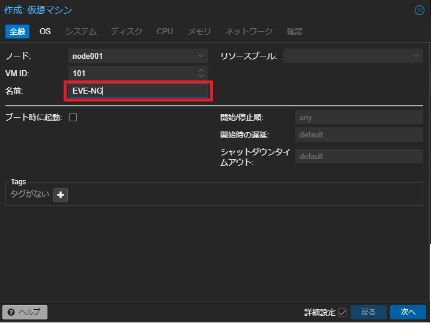
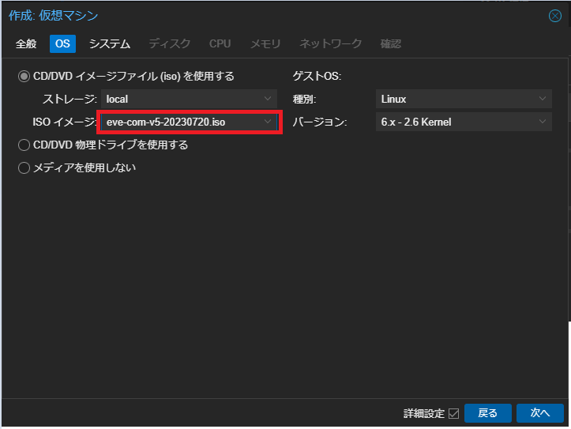
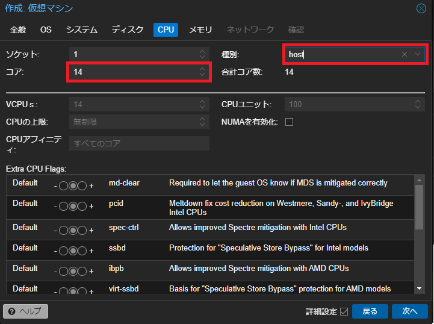

Deploy EVE-NG
0. はじめに
前回構築したproxmox上にEVE-NGのVMを建てます。
私は主にCCIE用に使用しており、メモリを50GB程度割り振ればDNACを除いたフルラボ構成で十分使用できるかと思います。
また、IOS以外にもJuniperやfortinet等の各種ベンダOSが動作するので、普段の業務での確認にも使いやすいかと思います。
1. ISOダウンロード
ここからeve-ngのISOイメージをダウンロードします。
https://www.eve-ng.net/index.php/download/

2. Proxmox上でVMを作成
次にproxmox側で管理画面右上の「VMを作成」をクリックし、VMを作成します。

VMの名前を入力します。

ダウンロードしてきたISOイメージを選択します。

管理画面上から リモートでVMをshutdownできるように、Qemuエージェントを追加します。

VMが使用するストレージとサイズを選択します。
使用するCPUのコア数を選択します。
また、EVE-NGではネストされた仮想環境になるので種別をhostにします。

使用するメモリサイズを指定します。

ネットワークの設定はデフォルトのブリッジを使用します。

nested virtualizationを有効にします。
proxmoxホスト上で、シェルを開きます。

シェル上で、以下コマンドでnestedが有効かどうか確認します。デフォルトで有効だと思います。
・Intel CPUの場合(有効ならY)
cat /sys/module/kvm_intel/parameters/nested
・amd CPUの場合(有効なら1)
cat /sys/module/kvm_amd/parameters/nested
以下コマンドでcpu typeを固定します。vmidはproxmox管理画面上のVM名の左に記載されている番号になります。
qm set <vmid> --cpu host

3. EVE-NGのインストール
作成したVMを起動し、EVE-NGのインストールを進めていきます。
デフォルトのままDone。

VM作成時にブリッジを選択しているので、今回はproxmoxと同セグメントにします。

今回はproxyを使用しないので、そのままDone。
Continueを選択。

Install completeとなったら、proxmox上で作成したVMのISOドライブを解除します。
CD/DVDドライブをダブルクリックし、メディアを使用しないを選択。

VMに戻り、Reboot Nowで再起動します。

再起動後、root/eveでログインします。
初期ログイン後はsetup画面が表示されます。

eve-ngに実際にログインするIPを設定します。
今回はDHCPにしますが、固定で振りたい場合はstaticを選択します。
proxyを使用しないのでdirect connectionにします。

設定完了後、起動するとhttp://<設定したIP>/ が表示されるので、ブラウザに入力しログイン。
admin/eveでログインできます。

このままだと、proxmox上からshutdownが出来ないので、eve-ngのCLI上でqemu-guest-agentをインストールします。
apt update
apt install qemu-guest-agent
以上になります。